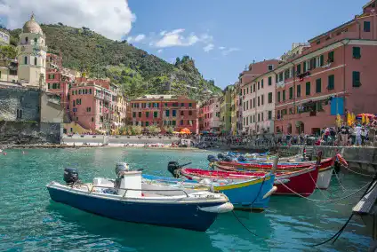

Italia
Ce pays n’est pas celui de tes origines, du moins pas directement. Cependant au fil de ta jeunesse, tu développes un amour pour ses paysages, ses traditions, sa gastronomie. Le nord de l’Italie devient pour toi un endroit sain et reposant dans lequel tu gardes des souvenirs de ce voyages avec tes sœurs.
Quelques mots sur le pays de mon cœur
L’Italie est un pays entre terre et mer, entre les Alpes, la méditerranée et les lacs. Ce pays possède des paysages plus variés et ensoleillés les uns que les autres. On l’appelle « la botte » du a sa forme et en l’appelant comme ça, on le reconnait entre mille. En Europe, l’Italie est un des pays les plus peuplé avec 57 100 000 habitants et une démographie constamment en hausse. Malheureusement sa population menace de vieillir… Les jeunes représentent seulement 20% des habitants contre 18% pour les plus de 60 ans… Des chiffres qui continue de se rapprocher.
A travers le temps
L’Italie s’est bâti sur l’émergence de l’empire romain. En effet les romains imposèrent leurs langues, leurs mœurs, leurs architectures… Et depuis les traditions, paysages et bâtisses que les romains ont instauré continuent d’émerveiller.
L'art
La botte est également très connue pour les sculptures, de Michel Ange par exemple, la peinture, notamment grâce à des artistes comme De Vinci, la littérature, la musique de Vivaldi entre autres, l’architecture avec les styles gothiques et baroques, le cinéma, ses traditions… Sans oublier sa gastronomie avec les pâtes en tous genre, les pizzas, le parmesan ! Mais nous ne pourrions pas parler de l’art Italien sans parler du futurisme. Ce courant artistique parut en 1909. Cette période marqua un vrai tournant dans l’art italien et lorsque l’on visite l’Italie, on ne peut rater ces œuvres d’art.
"Quand le futurisme parait en première page du Figaro, le 20 février, l’Europe n’est secoué par aucune crise grave. Et peu d’œuvres majeures voient le jour. Assez curieusement, cette année marqua une pause dans l’effervescence créative de ce début de siècle si fertile en innovations et en scandales. C’est une période de transition au cours de laquelle les créateurs tirent la somme de l’extraordinaire accélération des idées et des démarches esthétiques. Pour diffuser l’idée du futuriste, Marinetti déploie une importante activité éditoriale. Il imprime sur les presses de sa revue et de sa maison d’édition, tous deux baptisés Poesia, une traduction en italien du texte inaugural qu’il a intitulé Fondazione e manifesto del futurismo. Il publie son second manifeste, Tuons le clair de la lune dans le n° 7-8-9 de Poesia en avril, puis le reproduit en italien dans le recueil poétique de son ami Paolo Buzzi. Il édite également le livre de Gian Pietro Lucini, Revolverate, qu’il préface, celui de Frederico De Maria, Le Leggenda della vita et la traduction de D’annunzio intime, parue en France en 1903. Enfin il fait paraître les résultats de son Enquête internationale sur le vers libre. Entre temps, la première de sa pièce, Le Roi Bombance, est présentée le 3 avril au théâtre de l'OEuvre. Mais aucune de ces publications n'est futuriste au plein sens du terme. Et le drame que Marinetti a imaginé est encore imprégné de l'esprit symboliste ou encore de celui d'Alfred Jarry. Le futurisme n'aura un semblant d'existence que l'année suivante, lors de la rencontre des premiers artistes, Umberto Boccioni, Luigi Russolo et Carlo Carrà, qui rédigent en 1910 le Manifeste des peintres futuristes, et les premières soirées futuristes. Pour l'instant, le seul signe d'intérêt à l'égard de son projet est démontré par V. Scattolini qui fonde la revue Difesa dell'Arte en novembre, ouvrant largement ses pages aux poètes proches de Marinetti; Corra, Chiti et Settimelli."
Les régions connues
Différentes villes et régions se démarquent dans ce pays qu’est l’Italie…
En effet nous avons Rome, « la cité des césars et des papes ».
Milan, qui fait partie de la plus riche partie de l’Italie.
Gènes, la « riviera italienne ».
Venise, « grandeur et déclin de la Sérénissime » .
La Toscane, « la patrie de Michel-Ange, Dante, et Pétrarque »
La Sardaigne, « une côte récemment découverte »